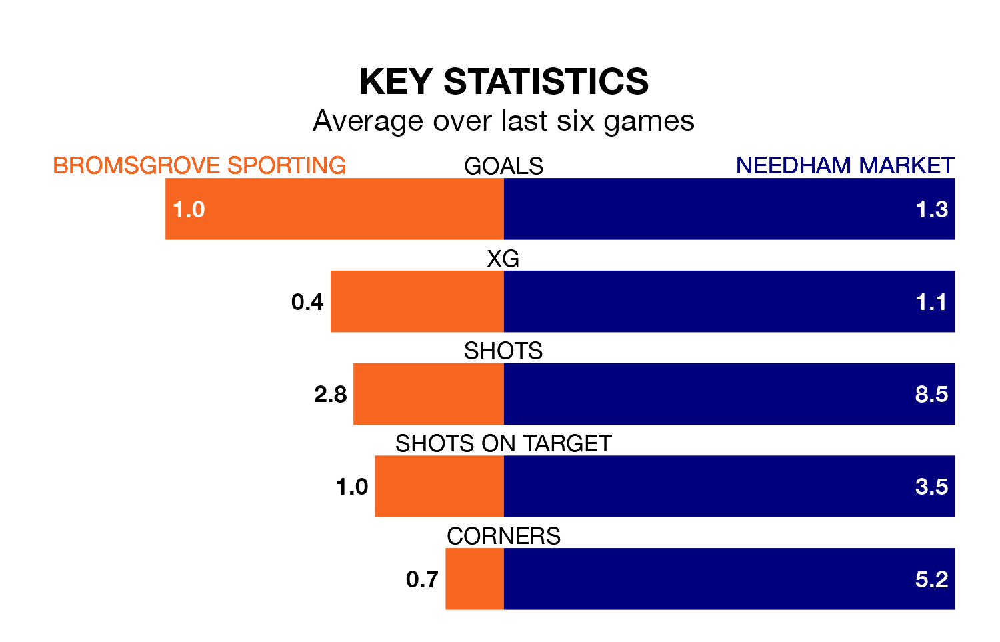

Needham Market are strong favourites to take all three points despite Bromsgrove Sporting's home advantage in Saturday's match at the Victoria Ground.
*Betting Company* are offering odds of 1.68 on Needham Market sealing the win, with the visitors sitting first in the Southern League Premier Central table.
Bromsgrove Sporting, who are 16th in the league and 38 points behind Needham Market, are priced at 3.97 to win. A draw is set at 3.82.
With 66 goals in 34 games so far this season, Needham Market are the league's joint-third-highest scorers with 1.9 goals per game. And they are conceding fewer than average, letting in 24 goals at a rate of 0.7 per game.
Bromsgrove Sporting, meanwhile, are below average scorers, with 1.1 goals per game, compared to a league average of 1.5. They have conceded 1.3 goals per game.
In the last 10 years, Bromsgrove Sporting and Needham Market have played each other on eight occasions. Bromsgrove Sporting won five of them and Needham Market three.
On average, Bromsgrove Sporting scored 1.1 goals and Needham Market 0.8 in those matches.
Their last meeting was on November 25, when Needham Market won 2-1 at home.
The home team are in mixed form in the Southern League Premier Central, with two wins and a draw from their last six games.
With four wins and two draws over that period, the visitors' form is much better – they have taken 14 points from 18, compared to Bromsgrove Sporting's seven.
Bromsgrove Sporting's last match was on March 16, a 2-1 loss against Berkhamsted.
Needham Market beat Redditch United 3-0 last time out, on Tuesday.
Updated: 10:19 (UTC), 22/03/24